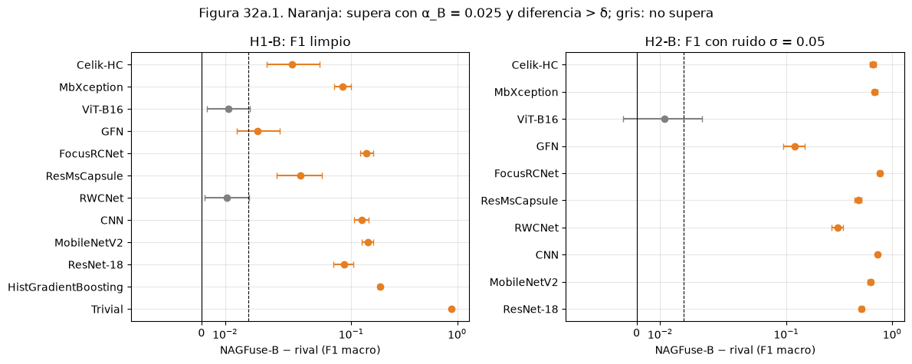
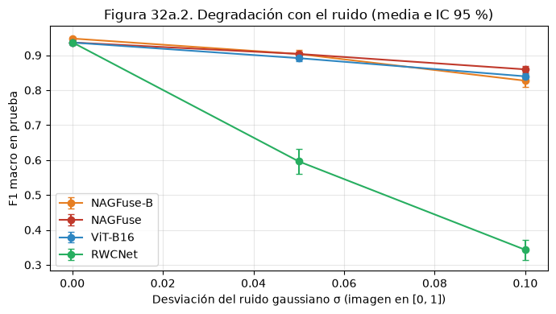

32a. Reproducción de la opción B#
Este cuaderno regenera las tablas y figuras del capítulo 32 desde los archivos versionados: el registro del piloto
(entregable3/experiments/piloto_opcion_B.json), las corridas de NAGFuse-B (entregable3/results/results_e2/NAGFuse-B/),
los contrastes de la opción B (entregable3/resultados_b/) y la tabla maestra (entregable3/resultados/tabla_maestra.csv).
No reentrena ni recalcula pruebas: lee lo que produjeron analisis_b.py y los scripts del análisis.
# Configuración común. El cuaderno funciona desde docs/ (Jupyter Book) o desde la raíz del repositorio.
from pathlib import Path
import json, pickle
import numpy as np
import pandas as pd
import matplotlib.pyplot as plt
from scipy import stats
REPO = next(p for p in [Path.cwd(), *Path.cwd().parents] if (p / "entregable3").is_dir())
RES = REPO / "entregable3" / "resultados" # tabla maestra (incluye la fila de NAGFuse-B)
RESB = REPO / "entregable3" / "resultados_b" # contrastes de la opción B (analisis_b.py)
RUNS = REPO / "entregable3" / "results" / "results_e2"
FIG = REPO / "docs" / "images" / "e3"
COLOR = {"NAGFuse-B": "#e67e22", "NAGFuse": "#c0392b", "ViT-B16": "#2e86c1", "RWCNet": "#27ae60", "GFN": "#8e44ad"}
plt.rcParams.update({"axes.grid": True, "grid.alpha": 0.3, "font.size": 10})
pd.set_option("display.precision", 4)
print("Repositorio:", REPO.name)
Repositorio: deep-learning-colaborativo
Piloto (solo validación)#
# Tabla 32a.1: piloto de los tres candidatos (una corrida cada uno, semilla 100) y regla de elección
P = json.load(open(REPO / "entregable3" / "experiments" / "piloto_opcion_B.json", encoding="utf-8"))
piloto = pd.DataFrame(P["filas"]).set_index("candidato")
piloto["dif_vs_A"] = piloto["f1_val"] - P["referencia_A"]
print("Referencia A (mismo intento de la búsqueda):", P["referencia_A"], "| elegido:", P["elegido"], "| se lanza:", P["lanzar"])
print("Regla:", P["regla"])
# Comprobación de la regla: mayor F1 de validación; si la diferencia con el segundo es < 0.002, gana el de menos parámetros
orden = piloto.sort_values("f1_val", ascending=False)
assert orden.index[0] == P["elegido"] and orden.f1_val.iloc[0] - orden.f1_val.iloc[1] >= 0.002
piloto
Referencia A (mismo intento de la búsqueda): 0.9688057 | elegido: NAGFuse-B2 | se lanza: True
Regla: máximo F1 de validación; empate < 0.002 -> menos parámetros; se lanza solo si supera a A
| f1_val | mejor_epoca | epocas | minutos | params_M | dif_vs_A | |
|---|---|---|---|---|---|---|
| candidato | ||||||
| NAGFuse-B1 | 0.9801 | 23 | 30 | 6.0 | 76.6 | 0.0113 |
| NAGFuse-B2 | 0.9851 | 21 | 30 | 6.6 | 52.8 | 0.0163 |
| NAGFuse-B3 | 0.9703 | 8 | 21 | 2.6 | 113.6 | 0.0015 |
# El piloto no evalúa en prueba: cada carpeta de la búsqueda solo contiene predicciones de validación
for b in ["B1", "B2", "B3"]:
d = RUNS / f"NAGFuse-{b}" / "hpo" / "trial_01"
print(b, sorted(p.name for p in d.iterdir() if p.suffix == ".pkl"))
B1 ['config.pkl', 'env.pkl', 'history.pkl', 'model_info.pkl', 'result.pkl', 'val_predictions.pkl']
B2 ['config.pkl', 'env.pkl', 'history.pkl', 'model_info.pkl', 'result.pkl', 'val_predictions.pkl']
B3 ['config.pkl', 'env.pkl', 'history.pkl', 'model_info.pkl', 'result.pkl', 'val_predictions.pkl']
Ejecución: hardware y tiempo por semilla#
# Tabla 32a.2: GPU y tiempo de entrenamiento de cada semilla de NAGFuse-B.
# env.pkl guarda la versión de torch como objeto propio; este lector sustituye las clases que no estén instaladas
# por objetos vacíos, de modo que se leen los campos de texto sin necesidad de instalar torch.
class LectorSinTorch(pickle.Unpickler):
def find_class(self, modulo, nombre):
try:
return super().find_class(modulo, nombre)
except (ImportError, AttributeError):
return type(nombre, (), {"__init__": lambda s, *a, **k: None, "__setstate__": lambda s, x: None})
def leer(p):
with open(p, "rb") as f:
return LectorSinTorch(f).load()
filas = []
for s in range(20):
d = RUNS / "NAGFuse-B" / f"seed_{s:02d}"
env, t = leer(d / "env.pkl"), leer(d / "timing.pkl")
filas.append({"semilla": s, "GPU": env["gpu"], "inicio (UTC)": env["timestamp"],
"entrenamiento_min": t["train_time_s"] / 60, "latencia_lote1_ms": t["inference"]["latency_bs1_ms_mean"]})
HW = pd.DataFrame(filas).set_index("semilla")
print(HW.groupby("GPU").agg(semillas=("GPU", "size"), entrenamiento_min_min=("entrenamiento_min", "min"),
entrenamiento_min_max=("entrenamiento_min", "max"), latencia_ms_media=("latencia_lote1_ms", "mean")).round(1))
HW.round(1)
semillas entrenamiento_min_min entrenamiento_min_max \
GPU
NVIDIA A100-SXM4-80GB 3 4.5 9.9
Tesla T4 17 12.4 29.6
latencia_ms_media
GPU
NVIDIA A100-SXM4-80GB 59.1
Tesla T4 58.8
| GPU | inicio (UTC) | entrenamiento_min | latencia_lote1_ms | |
|---|---|---|---|---|
| semilla | ||||
| 0 | NVIDIA A100-SXM4-80GB | 2026-11-25 23:48:41 | 9.9 | 57.8 |
| 1 | NVIDIA A100-SXM4-80GB | 2026-11-26 00:03:34 | 4.5 | 59.7 |
| 2 | NVIDIA A100-SXM4-80GB | 2026-11-26 00:11:18 | 9.8 | 59.7 |
| 3 | Tesla T4 | 2026-11-26 02:48:11 | 12.4 | 55.3 |
| 4 | Tesla T4 | 2026-11-26 03:06:56 | 13.9 | 56.8 |
| 5 | Tesla T4 | 2026-11-26 03:27:28 | 23.2 | 58.9 |
| 6 | Tesla T4 | 2026-11-26 03:58:24 | 21.7 | 60.0 |
| 7 | Tesla T4 | 2026-11-26 04:27:37 | 20.8 | 57.8 |
| 8 | Tesla T4 | 2026-11-26 04:55:51 | 29.6 | 57.6 |
| 9 | Tesla T4 | 2026-11-26 05:33:57 | 12.9 | 59.5 |
| 10 | Tesla T4 | 2026-11-26 05:53:20 | 21.3 | 56.3 |
| 11 | Tesla T4 | 2026-11-26 06:22:00 | 29.6 | 58.1 |
| 12 | Tesla T4 | 2026-11-26 07:00:08 | 14.9 | 59.0 |
| 13 | Tesla T4 | 2026-11-26 07:21:48 | 16.3 | 59.8 |
| 14 | Tesla T4 | 2026-11-26 07:45:04 | 15.9 | 59.8 |
| 15 | Tesla T4 | 2026-11-26 08:07:54 | 14.4 | 60.6 |
| 16 | Tesla T4 | 2026-11-26 08:29:05 | 22.8 | 60.3 |
| 17 | Tesla T4 | 2026-11-26 08:59:35 | 14.9 | 59.1 |
| 18 | Tesla T4 | 2026-11-26 09:21:13 | 18.4 | 58.7 |
| 19 | Tesla T4 | 2026-11-26 09:46:50 | 13.9 | 61.4 |
Interpretación. Las semillas 0 a 2 se entrenaron en A100-SXM4-80GB y las 3 a 19 en Tesla T4. El tiempo de entrenamiento depende de la GPU; la latencia con lote de 1 casi no cambia entre las dos (de 55 a 61 ms). Las horas están en UTC, la zona horaria de las máquinas de Colab.
H1-B: F1 macro limpio#
# Tabla 32a.3: los 12 contrastes de H1-B y el veredicto (alfa_B = 0.025, delta = 0.02)
H1 = pd.read_csv(RESB / "contrastes_H1_f1.csv")
RESUMEN = json.load(open(RESB / "resumen_b.json", encoding="utf-8"))
def decision(r):
if r.supera: return "Supera (> δ)"
if r.p_max_holm < RESUMEN["alfa_B"] and r.ic_lo > 0: return "Mejor, < δ"
return "No significativa"
H1["decisión"] = H1.apply(decision, axis=1)
print({k: RESUMEN[k] for k in ["semillas", "alfa_B", "delta", "H1_supera_a", "H1_de", "R3_cumple", "R3_cumple_con_alfa_005", "no_supera"]})
H1[["rival", "R", "media_dif", "ic_lo", "ic_hi", "p_t_holm", "p_w_holm", "p_boot_holm", "p_max_holm", "cliff", "dz", "decisión"]]
{'semillas': 20, 'alfa_B': 0.025, 'delta': 0.02, 'H1_supera_a': 10, 'H1_de': 12, 'R3_cumple': False, 'R3_cumple_con_alfa_005': False, 'no_supera': ['ViT-B16', 'RWCNet']}
| rival | R | media_dif | ic_lo | ic_hi | p_t_holm | p_w_holm | p_boot_holm | p_max_holm | cliff | dz | decisión | |
|---|---|---|---|---|---|---|---|---|---|---|---|---|
| 0 | Celik-HC | 20 | 0.0385 | 0.0277 | 0.0507 | 1.7794e-07 | 2.2888e-05 | 0.0012 | 0.0012 | 1.0 | 1.9813 | Supera (> δ) |
| 1 | MbXception | 12 | 0.0832 | 0.0694 | 0.0994 | 8.5452e-09 | 3.4180e-03 | 0.0012 | 0.0034 | 1.0 | 5.3448 | Supera (> δ) |
| 2 | ViT-B16 | 20 | 0.0115 | 0.0023 | 0.0204 | 2.2817e-03 | 3.4180e-03 | 0.0248 | 0.0248 | 0.6 | 0.8555 | Mejor, < δ |
| 3 | GFN | 20 | 0.0237 | 0.0150 | 0.0333 | 2.1009e-07 | 3.0518e-05 | 0.0012 | 0.0012 | 0.9 | 1.9318 | Supera (> δ) |
| 4 | FocusRCNet | 12 | 0.1399 | 0.1222 | 0.1607 | 6.4277e-09 | 3.4180e-03 | 0.0012 | 0.0034 | 1.0 | 5.5580 | Supera (> δ) |
| 5 | ResMsCapsule | 20 | 0.0421 | 0.0319 | 0.0531 | 1.8465e-09 | 2.2888e-05 | 0.0012 | 0.0012 | 1.0 | 2.7375 | Supera (> δ) |
| 6 | RWCNet | 20 | 0.0109 | 0.0014 | 0.0202 | 3.4762e-03 | 5.5809e-03 | 0.0248 | 0.0248 | 0.4 | 0.7458 | Mejor, < δ |
| 7 | CNN | 12 | 0.1250 | 0.1067 | 0.1455 | 3.0493e-08 | 3.4180e-03 | 0.0012 | 0.0034 | 1.0 | 4.6743 | Supera (> δ) |
| 8 | MobileNetV2 | 12 | 0.1430 | 0.1251 | 0.1626 | 3.4931e-09 | 3.4180e-03 | 0.0012 | 0.0034 | 1.0 | 5.9481 | Supera (> δ) |
| 9 | ResNet-18 | 12 | 0.0852 | 0.0674 | 0.1055 | 7.2878e-07 | 3.4180e-03 | 0.0012 | 0.0034 | 1.0 | 3.2235 | Supera (> δ) |
| 10 | HistGradientBoosting | 20 | 0.1876 | 0.1795 | 0.1939 | 1.9767e-26 | 2.2888e-05 | 0.0012 | 0.0012 | 1.0 | 22.7523 | Supera (> δ) |
| 11 | Trivial | 20 | 0.8842 | 0.8762 | 0.8905 | 3.5206e-39 | 2.2888e-05 | 0.0012 | 0.0012 | 1.0 | 107.2489 | Supera (> δ) |
# Figura 32a.1 (images/e3/opcion_b_forest.png): diferencias pareadas con IC 95 % en H1 (limpio) y H2 (ruido 0.05)
H2 = pd.read_csv(RESB / "contrastes_H2_ruido005.csv")
fig, axs = plt.subplots(1, 2, figsize=(12, 4.8), sharey=False)
for ax, (tab, tit) in zip(axs, [(H1, "H1-B: F1 limpio"), (H2, "H2-B: F1 con ruido σ = 0.05")]):
t = tab.iloc[::-1]
y = np.arange(len(t))
for yi, (_, r) in zip(y, t.iterrows()):
c = "#e67e22" if r.supera else "gray"
ax.errorbar(r.media_dif, yi, xerr=[[r.media_dif - r.ic_lo], [r.ic_hi - r.media_dif]], fmt="o", color=c, capsize=3)
ax.axvline(0, color="black", lw=0.8); ax.axvline(0.02, color="black", ls="--", lw=0.8)
ax.set_xscale("symlog", linthresh=0.05); ax.set_xlim(-0.03, 1.3); ax.set_yticks(y, t.rival)
ax.set_xlabel("NAGFuse-B − rival (F1 macro)"); ax.set_title(tit)
fig.suptitle("Figura 32a.1. Naranja: supera con α_B = 0.025 y diferencia > δ; gris: no supera")
plt.tight_layout()
fig.savefig(FIG / "opcion_b_forest.png", dpi=150, bbox_inches="tight")

# Tabla 32a.4: sensibilidad (MCC y semillas 0 a 9) y potencia observada frente a ViT-B16 y RWCNet
for f in ["contrastes_H1_mcc", "contrastes_H1_seeds0-9"]:
t = pd.read_csv(RESB / f"{f}.csv")
print(f, "| supera a", int(t.supera.sum()), "de", len(t), "| no supera:", list(t.rival[~t.supera]))
# Potencia de la t pareada para detectar delta al nivel alfa_B/12 con la DE pareada observada y R = 20 (simulación)
rng = np.random.default_rng(0)
for r in ["ViT-B16", "RWCNet"]:
sd = float(H1.set_index("rival").loc[r, "de_dif"])
x = rng.normal(0.02, sd, (200_000, 20))
t = x.mean(1) / (x.std(1, ddof=1) / np.sqrt(20))
print(f"{r}: sigma_d = {sd:.4f}, potencia = {(np.abs(t) > stats.t.ppf(1 - 0.025 / 12 / 2, 19)).mean():.3f}")
contrastes_H1_mcc | supera a 10 de 12 | no supera: ['ViT-B16', 'RWCNet']
contrastes_H1_seeds0-9 | supera a 10 de 12 | no supera: ['ViT-B16', 'RWCNet']
ViT-B16: sigma_d = 0.0134, potencia = 0.997
RWCNet: sigma_d = 0.0146, potencia = 0.988
Interpretación. NAGFuse-B supera a 10 de los 12 rivales. Frente a ViT-B16 y RWCNet la diferencia es positiva y su IC excluye el cero, pero es menor que δ: la condición R3 no se cumple. Con la desviación pareada observada, 20 semillas bastaban para detectar una diferencia de δ con potencia cercana a 1, de modo que el resultado no se debe a falta de semillas.
Hipótesis secundarias y evaluación ampliada#
# Tabla 32a.5: H3-B (no inferioridad y TOST frente al mejor rival en limpio)
pd.read_csv(RESB / "H3_no_inferioridad.csv")
| mejor_rival | R | dif | p_no_inferioridad | p_tost | |
|---|---|---|---|---|---|
| 0 | RWCNet | 20 | 0.0109 | 6.1935e-09 | 0.0056 |
# Tabla 32a.6 y figura 32a.2: robustez, calibración y conjuntos adicionales (media entre semillas)
M = pd.read_csv(RES / "tabla_maestra.csv").set_index("modelo")
ESC = ["F1 limpio", "F1 ruido 0.05", "F1 ruido 0.10", "F1 desenfoque", "F1 oclusión", "F1 fondo", "ECE", "NLL",
"F1 RealWaste", "F1 Garbage v2", "F1 WaRP-C"]
mods = ["NAGFuse-B", "NAGFuse", "ViT-B16", "RWCNet", "GFN"]
fig, ax = plt.subplots(figsize=(7, 4))
cols, x = ["F1 limpio", "F1 ruido 0.05", "F1 ruido 0.10"], [0, 0.05, 0.10]
for m in mods[:4]:
yv = M.loc[m, cols].astype(float).values
lo, hi = M.loc[m, [c + " IC_lo" for c in cols]].values, M.loc[m, [c + " IC_hi" for c in cols]].values
ax.errorbar(x, yv, yerr=[yv - lo, hi - yv], marker="o", capsize=3, color=COLOR[m], label=m)
ax.set_xlabel("Desviación del ruido gaussiano σ (imagen en [0, 1])"); ax.set_ylabel("F1 macro en prueba")
ax.set_title("Figura 32a.2. Degradación con el ruido (media e IC 95 %)"); ax.legend()
plt.tight_layout()
M.loc[mods, ["R"] + ESC]
| R | F1 limpio | F1 ruido 0.05 | F1 ruido 0.10 | F1 desenfoque | F1 oclusión | F1 fondo | ECE | NLL | F1 RealWaste | F1 Garbage v2 | F1 WaRP-C | |
|---|---|---|---|---|---|---|---|---|---|---|---|---|
| modelo | ||||||||||||
| NAGFuse-B | 20 | 0.9477 | 0.9034 | 0.8270 | 0.8855 | 0.9433 | 0.9404 | 0.0268 | 0.1718 | 0.5248 | 0.6039 | 0.3963 |
| NAGFuse | 20 | 0.9365 | 0.9036 | 0.8594 | 0.8645 | 0.9275 | 0.9198 | 0.0297 | 0.1911 | 0.4670 | 0.5227 | 0.3643 |
| ViT-B16 | 20 | 0.9363 | 0.8915 | 0.8395 | 0.8643 | 0.9317 | 0.9158 | 0.0385 | 0.2238 | 0.5198 | 0.5862 | 0.4357 |
| RWCNet | 20 | 0.9369 | 0.5960 | 0.3430 | 0.8141 | 0.9260 | 0.8954 | 0.0296 | 0.1868 | 0.4255 | 0.5123 | 0.3316 |
| GFN | 20 | 0.9240 | 0.7833 | 0.5221 | 0.7748 | 0.9223 | 0.8961 | 0.0509 | 0.3091 | 0.4154 | 0.5253 | 0.2880 |

# Tabla 32a.7: conjuntos adicionales. Contrastes de NAGFuse-B frente a ViT-B16 y frente a A, y criterio de consistencia
EX = pd.read_csv(RESB / "contrastes_extra.csv")
print(EX[EX.rival.isin(["ViT-B16", "NAGFuse", "RWCNet"])][["ds", "rival", "R", "propio", "riv", "dif", "ic", "p_max_holm"]].round(4).to_string(index=False))
# Consistencia (protocolo, sección 5): mejor media en al menos 2 de 3 conjuntos y no significativamente peor que ningún rival
riv = EX[EX.rival != "NAGFuse"]
mejor = riv.groupby("ds").apply(lambda d: bool((d.dif > 0).all()), include_groups=False)
peor_sig = riv[(riv.dif < 0) & (riv.p_max_holm < 0.05)]
print("Mejor media por conjunto:", mejor.to_dict(), "| conjuntos con desventaja significativa:", list(peor_sig.ds))
print("Criterio de consistencia:", "se cumple" if mejor.sum() >= 2 and peor_sig.empty else "no se cumple")
ds rival R propio riv dif ic p_max_holm
realwaste ViT-B16 12 0.5281 0.5198 0.0083 (np.float64(-0.0116), np.float64(0.0242)) 0.6592
realwaste RWCNet 12 0.5281 0.4255 0.1026 (np.float64(0.0857), np.float64(0.1196)) 0.0049
realwaste NAGFuse 20 0.5248 0.4670 0.0578 (np.float64(0.0442), np.float64(0.0697)) 0.0001
gd_v2 ViT-B16 12 0.6055 0.5862 0.0193 (np.float64(0.0103), np.float64(0.0286)) 0.0293
gd_v2 RWCNet 12 0.6055 0.5123 0.0932 (np.float64(0.0803), np.float64(0.1055)) 0.0049
gd_v2 NAGFuse 20 0.6039 0.5227 0.0812 (np.float64(0.0694), np.float64(0.0926)) 0.0000
warp_c ViT-B16 12 0.3921 0.4357 -0.0435 (np.float64(-0.0654), np.float64(-0.0189)) 0.0649
warp_c RWCNet 12 0.3921 0.3316 0.0605 (np.float64(0.0326), np.float64(0.0897)) 0.0117
warp_c NAGFuse 20 0.3963 0.3643 0.0320 (np.float64(0.007), np.float64(0.0582)) 0.1437
Mejor media por conjunto: {'gd_v2': True, 'realwaste': True, 'warp_c': False} | conjuntos con desventaja significativa: []
Criterio de consistencia: se cumple
# Tabla 32a.8: Friedman con Iman-Davenport y diferencia crítica de Nemenyi (11 modelos, bloques = semillas 0 a 11)
F = pd.read_csv(RESB / "friedman_nemenyi.csv").sort_values("rango_medio")
print(f"chi2 = {F.chi2.iloc[0]:.1f} | F_ID = {F.F_ID.iloc[0]:.1f} | p = {F.p.iloc[0]:.1e} | CD = {F.CD.iloc[0]:.2f}")
F["dif_con_B"] = F.rango_medio - F.set_index("modelo").loc["NAGFuse-B", "rango_medio"]
F["distinguible_de_B"] = F.dif_con_B > F.CD
F[["modelo", "rango_medio", "dif_con_B", "distinguible_de_B"]]
chi2 = 109.4 | F_ID = 113.1 | p = 4.2e-53 | CD = 4.36
| modelo | rango_medio | dif_con_B | distinguible_de_B | |
|---|---|---|---|---|
| 0 | NAGFuse-B | 1.7500 | 0.0000 | False |
| 7 | RWCNet | 2.3333 | 0.5833 | False |
| 3 | ViT-B16 | 2.5000 | 0.7500 | False |
| 4 | GFN | 4.0000 | 2.2500 | False |
| 1 | Celik-HC | 5.0833 | 3.3333 | False |
| 6 | ResMsCapsule | 5.5000 | 3.7500 | False |
| 2 | MbXception | 7.5000 | 5.7500 | True |
| 10 | ResNet-18 | 7.5000 | 5.7500 | True |
| 8 | CNN | 9.5833 | 7.8333 | True |
| 5 | FocusRCNet | 10.0000 | 8.2500 | True |
| 9 | MobileNetV2 | 10.2500 | 8.5000 | True |
# Tabla 32a.9: costo y frontera de Pareto del F1 limpio frente a los GFLOPs (modelos con GFLOPs medidos)
K = pd.read_csv(REPO / "dashboard" / "data" / "costo.csv").set_index("modelo")
K["F1 limpio"] = M["F1 limpio"]
K = K.dropna(subset=["gflops"]).sort_values("gflops")
K["Pareto"] = K["F1 limpio"] >= K["F1 limpio"].cummax() # ningún modelo con menos GFLOPs tiene mejor F1
K.assign(params_M=K.params / 1e6)[["params_M", "gflops", "lat_bs1_ms", "F1 limpio", "Pareto"]].round(4)
| params_M | gflops | lat_bs1_ms | F1 limpio | Pareto | |
|---|---|---|---|---|---|
| modelo | |||||
| FocusRCNet | 0.5206 | 0.2533 | 9.1637 | 0.8080 | True |
| ResMsCapsule | 4.2169 | 2.8396 | 4.9504 | 0.9056 | True |
| Celik-HC | 28.4241 | 6.4461 | 33.7622 | 0.9092 | True |
| RWCNet | 25.6040 | 9.1779 | 55.2718 | 0.9369 | True |
| GFN | 113.6713 | 11.3496 | 28.8391 | 0.9240 | False |
| MbXception | 28.3932 | 12.3896 | 10.1255 | 0.8647 | False |
| NAGFuse-B | 52.8571 | 18.2493 | 59.0459 | 0.9477 | True |
| ViT-B16 | 85.8033 | 35.1261 | 11.4880 | 0.9363 | False |
| NAGFuse | 89.8185 | 35.8952 | 29.1232 | 0.9365 | False |
Mecanismo y comparación con A (exploratorios)#
# Tabla 32a.10: compuerta encendida frente a apagada con ruido 0.05 (mismas corridas, pi = pi0 fijo al apagarla)
MEC = pd.read_csv(RESB / "mecanismo.csv")
d = MEC.f1_ruido005_on - MEC.f1_ruido005_off
print(f"pi0 medio {MEC.pi0.mean():.3f} (de {MEC.pi0.min():.3f} a {MEC.pi0.max():.3f}); pi = 1 en el "
f"{100 * MEC.frac_pi1_ruido005.min():.0f} % de las imágenes en todas las semillas")
print(f"F1 encendida {MEC.f1_ruido005_on.mean():.4f}, apagada {MEC.f1_ruido005_off.mean():.4f}, diferencia {d.mean():+.4f}; "
f"positiva en {(d > 0).sum()} de {len(d)} semillas; t pareada p = {stats.ttest_rel(MEC.f1_ruido005_on, MEC.f1_ruido005_off).pvalue:.4f}; "
f"Wilcoxon p = {stats.wilcoxon(MEC.f1_ruido005_on, MEC.f1_ruido005_off).pvalue:.4f} (sin ajuste)")
pi0 medio 0.512 (de 0.508 a 0.515); pi = 1 en el 100 % de las imágenes en todas las semillas
F1 encendida 0.9034, apagada 0.8971, diferencia +0.0063; positiva en 14 de 20 semillas; t pareada p = 0.0095; Wilcoxon p = 0.0042 (sin ajuste)
# Tabla 32a.11: NAGFuse-B frente a NAGFuse (A), por condición y por hardware de B
print(pd.read_csv(RESB / "B_contra_A.csv")[["cond", "R", "media_dif", "ic_lo", "ic_hi", "p_t", "p_w", "p_boot"]].round(4).to_string(index=False))
RUN = pd.read_csv(RES / "por_corrida.csv")
fb, fa = (RUN[RUN.model == m].set_index("seed").f1 for m in ["NAGFuse-B", "NAGFuse"])
dif = (fb - fa).to_frame("B − A").join(HW["GPU"])
dif.groupby("GPU")["B − A"].agg(["size", "mean"]).join(fb.to_frame("F1 B").join(HW["GPU"]).groupby("GPU").mean()).round(4)
cond R media_dif ic_lo ic_hi p_t p_w p_boot
limpio 20 0.0113 0.0021 0.0205 0.0032 0.0027 0.0162
ruido_0.05 20 -0.0002 -0.0153 0.0138 0.9683 0.9854 0.9618
| size | mean | F1 B | |
|---|---|---|---|
| GPU | |||
| NVIDIA A100-SXM4-80GB | 3 | 0.0040 | 0.9414 |
| Tesla T4 | 17 | 0.0126 | 0.9488 |
Interpretación. Con ruido la compuerta se abre del todo en todas las imágenes, como garantiza el Teorema 2, y apagarla reduce el F1 en 0.006, menos que δ. La ventaja de B sobre A en limpio (+0.011) es mayor en las semillas entrenadas en T4 que en las tres entrenadas en A100; con tres semillas no se puede separar el efecto del hardware del de las ramas.